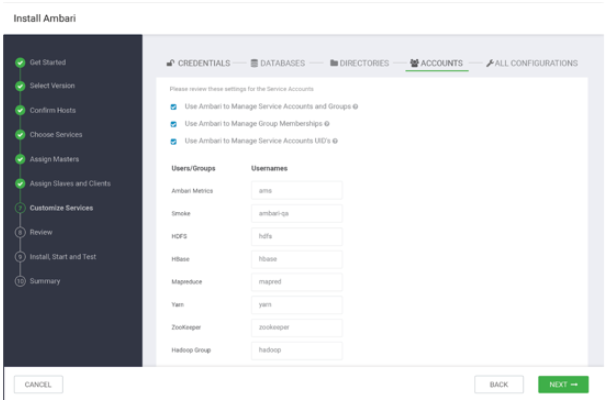
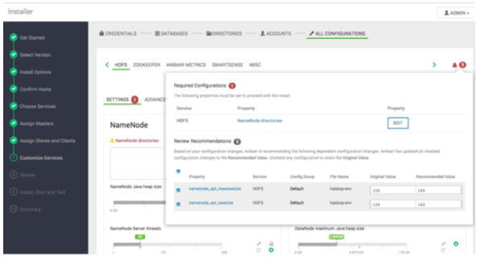

自定义服务
自定义服务这一步为您展示了一系列选项卡，这允许您检查以及更改您的集群设置。集群安装向导会试图为每个选项设置合理的默认值。强烈建议您复查这些设置因为您可能有更高级的需求。

Ambari将会把常用的自定义配置元素组合起来分为四组：凭据（Credentials），数据库（Databases），目录（Directories），账户（Accounts）。其他所有的配置都可以在安装向导的All Configurations部分找到。
凭据
管理员和数据库账户的密码被分组在一起以便于输入。根据您选定的服务，将会提示您为每个服务输入所需的密码，也有选项允许您更改管理员账户使用的用户名。
[info] 注意
为了安全，Ranger和Atlas要求您输入一个强密码。将密码悬停在每个属性上可以查看其对密码的要求。不满足需求的密码将会在Customize Services**步骤中的All Configuration选项卡中高亮显示。
数据库
一些服务需要有后台数据库才能正常工作。针对您选择要安装的的每一个需要后台数据库的服务，将要求您选择使用哪个数据库并配置该数据库的连接信息。
[info] 注意
默认情况下，Ambari会为Hive Metastore（元数据存储）安装一个新的MySQL数据库实例，为Oozie安装一个Derby数据库实例。如果您计划将现有的数据库用于MySQL/MariaDB，Oracle，或者PostgreSQL，请在继续前编辑数据库类型和主机。有关在MariaDB上创建外部数据库的快速示例，参见：Install MariaDB for use with multiple components, in Administering Ambari。
[warning] 警告
不支持使用Microsoft SQL Server或SQL Anywhere数据库。
目录
为数据和日志存储选择正确的目录很重要。Ambari根据您环境中可用的挂载点选择合理的默认值，但是我们强烈建议您复查由Ambari推荐的默认路径。特别的，在HDFS选项卡下面，确保不能在HDFS的NameNode目录和DataNode目录路径使用类似于/tmp和/var的目录。
账户
服务账户的用户和组也是在Accounts选项卡下配置。服务组件将会以这些操作系统账户运行。如果在您的主机上不存在这些用户，Ambari将自动在主机本地创建这些用户和组。如果这些用户已经存在，Ambari将使用这些账户。
您可能会禁止对组权限和用户权限的操作，这取决于您的环境是如何配置的。如果是这样，那么将有多个选择可以选定Ambari将如何处理创建和编辑用户：
使用Ambari去管理服务账户和组
Ambari会为每一个需要的服务创建服务用户和组，如果这些用户和组分别在Ambari管理的主机上的/etc/password文件 和/etc/group文件中不存在的话。
使用Ambari管理组关系 服务将会从组中添加或删除服务账户。
使用Ambari管理服务账户的UID Ambari能够所有服务账户的UID。
其他所有配置
在这里您将有机会复查和修正您服务的其余配置。通过每个配置选项卡浏览。将您的鼠标停留在每个属性上时，将会展示一个简短的描述以说明该属性的作用。在这里展示的选项卡的数量取决于您打算安装到集群上的服务。任何需要注意的有配置问题的服务都将会显示在需要注意的带有数字属性的铃声图标中。

点击铃铛弹出的内容包含了需要引起您注意的配置，强烈建议您复查并修改这些配置，这些配置将会基于Ambari的推荐自动更改除非您选择退出这些更改。要求有问题的配置必须被处理以后才能进行安装向导的下一步。在继续之前请仔细地检查要求和推荐的设置并解决这些问题。